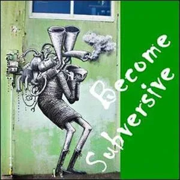
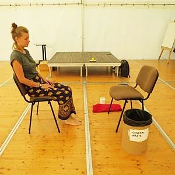
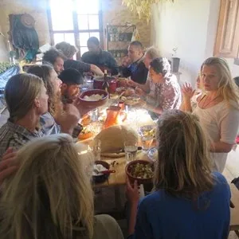
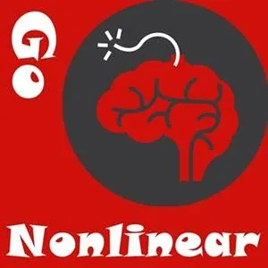

Become An Experimenter on Strikingly
-
There is a point where deciding to leave things untried
is beneath your dignity as a human being.
Perhaps you have reached that point...
-
In the Gameworld and Context of Possibility Management, 'Experimenting' means to make Intentional Discovery Actions in one or more of your 5 Bodies. Your Experimental Actions are empowered by a Quest.
Your Quest starts with the assumption that you do not know, and Experimenting is your efforts to explore.
You can Experiment openly or secretly, individually, in pairs, or in a Team using Discovery Speaking, one of the 7 Kinds of Speaking.
Authentic Experiments originate in one of the 9 Gaps: Not Knowing, Nothingness, Timelessness, Silence, Disidentification, Storylessness, and Outside of any Resonance Field.
For an Experiment to be most valuable and perhaps also most effective the experimental Space needs a Spaceholder to hold and navigate the Spaces of the Discovery Journey, and a Scribe who makes clear notes in their Beep! Book about new Questions and new Distinctions discovered, in order to share them with the Creative Commons. These roles can be fulfilled by the same person.
Two of the most rewarding ways to Experiment are: 1. In a Possibility Team or 3Cell, and, 2: In a 5-Body Intimacy Journey.
-
Information Point
Experiments can break the Teflon layer that makes you go back to 'business as usual'.
Experiments can open your eyes and ears so that you perceive the full extent of what is.
Experiments can turn you into a 'transformational stuntwoman' trying things that are so far away from anything you know.
Experiments can be dangerous and throw you into waves of feelings and emotions.
Experiments can transform you from a fence-sitter to a main actor.
Experiments transform you from a popcorn eater to a movie theater owner.Experiments take you to your next step along the Path.
What Is An Experimenter?
The term 'Experimenter' (with a capital 'E') is intended to mean someone who makes conscious present-moment actions without assuming that they know what is going on, or what else is possible. The actions are improvised, guided by your Bright Principles, your Archetypal Lineage, and, one must admit, by E.C.C.O. (Earth Coincidence Control Office).
One must also admit that there are 3 Worlds of action and inaction (Upperworld, Middleworld, and Underworld). Our research indicates that whatever actions are not made as conscious Experiments, are made as unconscious Reactivity in the service of Buttons, Hooks, Triggers, Traumas, Voices, or Imbalances which generally serve the unconscious shadow-world purposes of your Gremlin.
Being an Experimenter (with the capital 'E') is a way of claiming that YOU are doing the Experimenting, not your Gremlin. Then your Experiments serve Conscious Purposes such as:
- To build Matrix.
- To Expand Your Box.
- To improve your skills with the 13 Tools on your energetic toolbelt.
- To escape the patriarchy.
- To create a Winning Happening game.
- To grow up.
- To flame on.
- To activate your potentials.
- To activate the potentials of others.
- To activate the potentials of groups and teams.
- To build bridges to next culture.
- To make intimacy journeys.
- To be the space through which your Bright Principles can do their work in the world.
- To deliver the services of your Archetypal Lineage.
- To play full out.
What Is A Non-Experimenter?
It may seem strange to claim this, but it could be that even if you try to be a non-experimenter, you are still only experimenting.
Were you given a User's Guide to Your 5 Bodies when you were born? No.
Are you following the step-by-step Handbook To A Fulfilling Life provided to you by your parents? No.
Even if you strictly adhere to the One-Right-Way Linear Life Plan that is marketed to you by your culture and times, the next moment may demand choices and actions that do not fit the menu of responses they gave you to respond from. Then what?
It turns out that your Being is amazingly capable of Evolution, but your survival strategy is not.
Your complex personality for interfacing with the world which you developed since childhood (which Possibility Management refers to as your Box) is designed to defend itself to the death.
Your ego, your belief system, your worldview (in other words, your Box...) thinks that if it can defend itself, it can defend you. Your Box's highest priority is to block Evolution.
Which will win? Evolution or stasis? Evolution or tradition? Evolution or habit?
Hmmm....
If the purpose of the Universe is Evolution... which if you look around becomes rather self-evident... by trying not to evolve you may be up against a force of nature.
In fact, you may have noticed that if you succeed in blocking your Being from the evolution of consciousness for too long, the Universe eventually gets pissed off and hits your life with a hammer. It puts a crack in your Box: You lose all your money. You get a nasty disease. Your computer fries and all your data is lost. You get laid off from your job. Your girlfriend runs off with the Circus.... you know what we mean. Shit happens.
Is this arrangement fair? No.
Does it allow you to have complete freedom of will to live a non-life of non-change? No.
Ah, well. You can keep trying to pretend like you are NOT an Experimenter, that you are afraid to Experiment, that you refuse to be at risk in life... but like it or not, even that is an Experiment...
You are designed to be an intentional Experimenter, to wake up each morning in awe.
Dawn begs to unleash your unquenchable aliveness.
You are given, in each moment, every chance in the world to try out things you never tried before.
And you want to try to resist this? What for?
Makes you think, doesn't it?
-
QUESTION: What Does Experimenting Do?
5-Body Experimenting naturally creates a particularly useful kind of stress on your Being. The stress comes from placing your Being in a transformational field where your Being is at risk of evolving. How does your Being evolve? Through building matrix.
Matrix is the structure in your Being that is built out of distinctions.
A distinction is a differentiating refinement.
Each new distinction changes your perceptions in a way that you can discern two groups of things where before you only perceived one grouping.
For example, at one point you knew that birds were those creatures with feathers who could fly and make sounds, very different from cats or dogs or horses. Then one day you learned that certain small birds are called Sparrows, and other bigger birds are called Ravens, and you could tell the differences between them. Suddenly the world of birds became richer and more complex, and you could appreciate how different ducks, parrots, swans, eagles, ostriches, toucans, and humming birds are from each other, and all still be birds!
You can feel it when your Being gets reordered by taking on a new distinction. You have this, "Ah-hah!" sensation while all the other distinctions that already exist in your Being adjust themselves to reflect your new clarity.
It turns out that the more distinctions you have woven together into your Being, the more consciousness your Being can catch. Your awareness increases. This is why if you read a book a second time after five or ten years, you may take in different things from it.
Experimenting provides a particular kind of stress that builds matrix in your Being at the maximum possible rate. In other words, conscious Experimenting optimizes the evolution of consciousness.
Building matrix in your Being creates proper circumstances to cause evolution by reflex... sudden expansion into unexpected dimensions. Sometimes it works...
-
Matrix Code: YOUTUBEx.54
The life of an Experimenter: the fear, the frustration, the joy, and the sadness of letting go of the old identity ... in ecstasy
-
Decision Point
You have a decision to make: Should you become a Conscious Experimenter? Yes, or No?
No one can become an Experimenter for you.
On the other hand, no one can stop you from becoming an Experimenter.
You are facing the question of whether or not to take radical responsibility for being an Experimenter.
Either way you choose there are consequences...
What are the pros and cons?
More appropriately you might ask, "Who are the Pros, and Who are the Cons?"
Even if you identify the Professional Experimenters, and 'experimenters' who are actually Con-men (or Con-women), in the end it is up to you to choose your Path.
Experimenter Pros
Experimenting feeds your Being and is a central source of delight in your daily life.
Experimenter Cons
Experimenting is a con-cept.
Sometimes you pretend as if you are Experimenting,
but the thought of actually Experimenting scares the shit out of you,
and you are just trying to look cool.
The objectives given to us by modern culture are so familiar they seem almost unquestionably right and good and normal. These include things like:
- Make money
- Achieve security
- Find your Unique Selling Point and copyright it
- Make franchises
- Become a brand
- Patent your ideas
- Gain financial success
- Win, regardless of how many losers you make, regardless of who pays the bill
- Make a profit
- Gain political power
- Get a good job
- Go to heaven
Experiments are still going on, of course, but these experiments serve unconscious purposes which would be too painful to serve if you could feel the awfulness of the consequences you are creating.
-
Innovation Point
[

](http://becomesubversive.mystrikingly.com/)
by Seth Godin
Innovation relies on guts, because anything innovative you try might not work.
Innovation also relies on generosity, because guts without seeking to make things better is merely hustle.
It's not about hustle anymore. That was last Century. There is nothing to sell anymore because anything that already is known about or exists does not work. It all leads to extinction of life on planet Earth. What is required now is raw invention.
The innovator [experimenter] shows up with something she knows might not work (pause for a second, and contrast that with everyone else, who has been trained to show up with a proven, verified, approved, deniable answer that will get them an A on the test).
If failure is not an option, then, most of the time, neither is success.
It’s pretty common for someone to claim that they’re innovative when actually, all they are is popular, profitable, or successful. Nothing wrong with that. But it’s not innovative.
Allow generosity to take the lead and you’ll probably discover that it’s easier to find the guts to innovate right off the edge of the map.
It just needs to be the right map...
-
Often times an Experimenter must break the known 'rules'...
This is when it is useful to shift identity and Become A Pirate.
-
Experiment Point
You go to the edge of your comfort zone and stand there,
teetering back and forth, deciding whether to experiment or not.
In an instant you could jump back into the sticky-sweet familiar Marshmallow Zone of your Box
where things go as you predict. You could go back to sleep... back to automatic... back to normal...
where you know who you are, who other people are, and how things go in a world like this with people like them.
It works, after all. You have proved it works over and over by surviving this far.
You could continue to survive like this for the rest of your life and no one could blame you. It is reasonable.
All of your interpretations, justifications, and explanations are valid.
You have evidence for your stories.
On the other hand... you could stay there at the edge... just staying there...
Intentionally not deciding to go back to normal is itself an Experiment.
In fact, this is EXPERIMENT with Matrix Code BANEXPER.01... Stay At An Edge.
Don't decide.
Keep breathing.
Just stay there.
Notice what happens - and what does not happen - at the edge.
[

](http://gototheedge.mystrikingly.com/)
Choose An Edge And Stay At That Edge
Matrix Code BANEXPER.01
Pick an edge. There are many possible edges to choose from:
- What you prefer to wear.
- What you choose to eat.
- How loudly you speak.
- How slowly you speak.
- How long you look at someone in the eyes.
- How soon before you object to someone's behavior.
- How much of your own mess you leave behind you.
- How much of other people's messes you clean up.
- How much money you ask for one hour of your time.
- How far you bend the rules so as to do what you want.
- How little/much you can eat.
- How much importance you can exude from your attitude.
- How relational you can be.
- How much you notice/ignore.
This EXPERIMENT is to practice being an Edgeworker. Choose one of these edges listed above (or another edge of your choice) and stay at that edge without exaggerating or diminishing what you are up to by being at that edge. Simply be fully and Attentively there. Make notes in your Beep! Book about what you notice that happens and does not happen by keeping your Being at that edge. about what you by staying at this edge.
For example, let's say you stay at the edge of how much air you breathe in. Breathe in an additional 10% more air with each incoming breath: no more, no less, for a whole day.
Or stay on the edge of how many seconds of silence tick by before you speak back when someone speaks to you.
Or stay on the edge of not believing what the other person is saying. On this edge you diminish the usual amount of credibility you arbitrarily grant to others.
There are so many edges to stand on as an Experimenter.
After completing this experiment, please register Matrix Code BANEXPER.01 in your free account at StartOver.xyz. This experiment is worth 1 Matrix Point.
[

](http://boxtechnology.mystrikingly.com/)
Absolutely Refuse To Experiment
Matrix Code BANEXPER.02
This EXPERIMENT is to choose one day this week and refuse to Experiment for that whole entire day. How can you do this? Here are some hints:
- Speak only in clichés. Try to think only in clichés. See things only in pre-packaged categories.
- As soon as you have a name for something, stop experiencing it.
- Perceive the world like your parents did at your age.
- Agree with what anyone around you says.
- Buy a newspaper. Carry it around all day. Look at the sports page with interest.
- Never go first. Never offer suggestions. Do not go off your beaten path.
- Do not stand out from the crowd. Only do what others are doing. Cross the street between the lines.
- Call your mother and act as if you are back home, eating the bread she buttered for you.
- Do not put your attention on anything interesting or different. Ignore anything that stands out.
- Criticize any behavior that others classify as weird or abnormal.
- Focus on the banal, the ordinary. Keep a smile on your face.
- Choose vanilla ice cream.
- Challenge no one. Do not ask questions.
- Be as invisible as you can.
- Take no risks.
Write down in your Beep! Book any feelings or emotions that come up for you while you refuse to Experiment.
Write down where these emotions come from, and what they mean.
Do not share your observations with anyone.
Pay particular attention to the dreams you have tonight.
After completing this experiment, please register Matrix Code BANEXPER.02 in your free account at StartOver.xyz. This experiment is worth 1 Matrix Point.
[
](http://shiftidentity.mystrikingly.com/)
Call Yourself An Experimenter
Matrix Code BANEXPER.03
There is no right answer to the question, "What is an Experimenter?"
Therefore, there is no wrong answer either!
There can, however, be relevant answers, interesting answers, ordinary answers, provocative answers, or transformational answers.
This EXPERIMENT is, for the next four weeks, whenever you meet someone new, after you tell them your name add on: "I am an Experimenter."
When anyone asks, "What do you mean Experimenter?", or asks which experiments you are doing now, Experiment exactly in that moment by inventing a new and true answer for them that you never gave to anyone else ever before.
This EXPERIMENT is about being Radically Responsible for being an Experimenter, and proving it to yourself by experimentally revealing to people that you are an Experimenter, and proving it to others (even if they do not know it) by inventing new answers each time you describe to someone what it means to be an Experimenter.
Please write your definitions of an 'Experimenter' in your Beep! Book for future reference... for example, to read over in those times when you forget what you are...
After completing this experiment, please register Matrix Code BANEXPER.03 in your free account at StartOver.xyz. This experiment is worth 1 Matrix Point.
[

](http://5phasesofchange.mystrikingly.com/)
Learn The 5 Phases Of Change
Matrix Code BANEXPER.04
If any of your Experiments work, they will cause change.
- Perhaps the change is outside of you in your surroundings or physical circumstances.
- Perhaps the change is inside of you regarding how you perceive things, classify things, how you regard yourself or stop disregarding yourself.
- Perhaps the change is between you and others and the way you make offers and interact with others.
- Perhaps the change is between you and what is possible as potential, and how you block or accept opportunities made to you seemingly by 'accident' (but actually by E.C.C.O.).
Any change, whether sudden or slow, partial or complete, is a process. Being an Experimenter includes consciously navigating through all 5 Phases Of Change:
- Denial with fear.
- Outrage with anger.
- Bargaining from Gremlin.
- Grief with sadness.
- Responsibility with joy.
Once you feel at home in the 5 Phases Of Change by experiencing them personally, do this EXPERIMENT: The next time someone around you is in a Liquid State (which could be less than 5 minutes from now...), sit down with them, explain the thoughtmap of the 5 Phases Of Change, and ask them where they are right now on that map.
Listen to how it is for them to be in that place, and encourage them to do the Experiment of choosing to be there, exactly where they are, as a way of regaining their own presence and power during their change process.
After completing this experiment, please register Matrix Code BANEXPER.04 in your free account at StartOver.xyz. This experiment is worth 1 Matrix Point.
[
](http://authority.mystrikingly.com/)
Wear A White Experimenter's Coat
Matrix Code: BANEXPER.05
This EXPERIMENT is to go to a laboratory supply shop or a used clothing store and get yourself a classic scientist's white laboratory coat. Wear it all day every Tuesday for three months no matter what you are doing during that day.
Be sure to keep a pen and Beep! Book visibly in your pocket, along with a Slide-Rule (What? You don't know what a Slide-Rule is?), a Stethoscope, a Volt-Ohm Multimeter... some flowers... you get the idea.
Wear your white coat like an experimenting researcher would wear a white coat, as a proud badge of an honorable profession, not as a Halloween costume.
Get accustomed to being seen as an Experimenter, even when you look in the mirror or otherwise see a reflection of yourself. Of course you are an Experimenter!
When someone asks why you are wearing the white coat, simply say, "I am an Experimenter. I am doing the Experiment BANEXPER.05 from StartOver.xyz."
After completing this experiment, please register Matrix Code BANEXPER.05 in your free account at StartOver.xyz. This experiment is worth 1 Matrix Point.
[
](http://becomecentered.mystrikingly.com/)
Do A Physical Body Experiment
Matrix Code BANEXPER.06
This EXPERIMENT is to get some flour, water, salt, and perhaps yeast or baking powder, and make bread from scratch and then eat it for your main meal of the day along with some vegetable soup, using dandelion leaves and dandelion flowers, mallow, plantain, or any other wild greens you know are edible. Take some photos of your preparation and of your meal.
Use a recipe for the bread if you want, but not necessarily. There are so many kinds of bread to make by hand: tortillas, pita, scones, bagels, biscuits, laho, lefse, naan, ciabatta, kisra, kulcha, kifli, matzo, paratha, samoon, sangak, taftan, vanocka, and khobz... for example.
Invite friends over for the meal, if you want. Upload the photos and send a link of your photos for proof of your experiment.After completing this experiment, please register Matrix Code BANEXPER.06 in your free account at StartOver.xyz. This experiment is worth 1 Matrix Point.
[

](http://memeticengineering.mystrikingly.com/)
Do An Intellectual Body Experiment
Matrix Code BANEXPER.07
This EXPERIMENT is to set up a chair across from your chair in a semi-private space and have a 20 minute long conversation with yourself out loud.
Say whatever you want to yourself. Get radically honest.
Include both the information and the angry, sad, scared, and glad emotional parts. Let yourself get outrageously loud.
If you ask yourself any questions, immediately and without thinking, jump over to the other chair and answer yourself back, also including both the information and the emotions.
Ask yourself dangerous questions, that is, questions that you might be afraid to hear the answers to. Write down the answers you get from yourself in your Beep! Book under the heading WHAT I SAID TO MYSELF.
For extra credit: Write and publish a short article about what happened and what it was like for you to do this experiment.
After completing this experiment, please register Matrix Code BANEXPER.07 in your free account at StartOver.xyz. This experiment is worth 1 Matrix Point.
[
](http://consciousfeelings.mystrikingly.com/)
Do An Emotional Body Experiment
Matrix Code BANEXPER.08
This EXPERIMENT is, early on a Saturday morning, wrap yourself up in a collection of strange or organic materials you have previously collected for this Experiment. Make sure you have head gear, maybe also a mask, something over your hands and feet, and perhaps a stick or improvised tool or weapon to lean on.
Walk into the middle of the shopping zone of your village, find a place, and stand there for at least 3 hours.
Alternate between Self Observation and meditation to notice what your feelings are and what your emotions are, knowing that feelings and emotions are very different from each other.
If anyone tries to talk to you, look at them in the eyes but only make sounds.
If anyone tries to give you money, just shake your head, "No!" This is not about begging. (That is a different Experiment!)
Do not scare the children (that would be your Gremlin...), but rather connect with them kindly, to let them know that something completely different from modern culture is possible, and that you are a doorway to that something which they can remember and use any time they want.
After completing this experiment, please register Matrix Code BANEXPER.08 in your free account at StartOver.xyz. This experiment is worth 1 Matrix Point.
[

](http://holdspace.mystrikingly.com/)
Do An Energetic Body Experiment
Matrix Code BANEXPER.09
The next time you are at a crowded restaurant or a big dinner party, do this Energetic Body contact EXPERIMENT. Sit in silence for a moment, then look along the table at someone you are not talking to, or look across the room at a stranger, and focus your attention on wondering who they are. Count the seconds to measure how long it takes before they feel your glance and look up directly at you.
How does this happen? How can you feel someone else looking at you from across the room?
For some people it can take up to three minutes before they notice you staring at them. For other people it may take only two or three seconds before they notice the sensation of your glance. What makes the difference between people's sensitivity?
Title a new page in your Beep! Book ENERGETIC BODY EXPERIMENT and write down whatever you can figure out for answers to the above questions.
You can even start a conversation at the table about what other people have figured out about this phenomena that everyone knows about but no one (especially not scientists) understand.
After completing this experiment, please register Matrix Code BANEXPER.09 in your free account at StartOver.xyz. This experiment is worth 1 Matrix Point.
[
](http://4lineages.mystrikingly.com/)
Do An Archetypal Body Experiment
Matrix Code BANEXPER.10
Before the sun sets, go to a special place where you can see the sun set over the horizon. Then do this EXPERIMENT:
Find a comfortable place to stand and then enter First Position of a Possibilitator, that is, get centered, make your grounding cord, then your bubble, your Gremlin sitting at your side, your Sword Of Clarity to hand, make your work space, and call your Bright Principles into your work space. Then use your Clicker and expand your work space to include you, the whole of planet Earth, and also the Sun.
Hold Space for the Sun to set. This will take about a half hour.
Keep it simple. No singing, chanting, dancing, or poetry. Do not burn incense or sacrifice flowers. Simply hold space for the sun to set.
Write any insights or instructions you receive into your Beep! Book under HOLDING SPACE FOR THE SUNSET.After completing this experiment, please register Matrix Code BANEXPER.10 in your free account at StartOver.xyz. This experiment is worth 1 Matrix Point.
[
](http://pirate.mystrikingly.com/)
Change One Game Rule
Matrix Code BANEXPER.11
You participate in many named and un-named games in your day-to-day life. For example:
- Standing in line at the Post Office.
- Who pays for the meal at the restaurant.
- How to order something at the café.
- Card games, board games, computer games (where the rules cannot be changed because you play with a machine...)
- Whose turn it is to cook dinner.
- What changes are allowed in your daily routine schedule, and which are not allowed.
This EXPERIMENT is to choose one of the games you are about to play, and change one rule of the game.
Do this one time making NO agreement beforehand with any other players in that game, then do the same experiment again, except negotiate an agreement with the other players to change that one rule before you play. Notice how important negotiating is, and how strongly people cling to the accepted rules as if they were real or true.
Changing one rule changes an entire game. For example, get a group of people together for an evening of card playing. Use two decks of regular playing cards to play Rummy for half-an-hour or so, until the game is flowing smoothly, each person taking their turn to play. Then agree to change one rule of the game: that everyone can play at the same time. Voila! Now you are playing Pirate Rummy! The entire game experience is suddenly changed.
After completing this experiment, please register Matrix Code BANEXPER.11 in your free account at StartOver.xyz. This experiment is worth 1 Matrix Point.
[
](http://gameworldbuilder.mystrikingly.com/)
Change One Gameworld Rule
Matrix Code BANEXPER.12
Read through the Gameworlds website to get an understanding of how deeply we human beings create and live within gameworlds - even without knowing that our lives are fabricated out of gameworlds.
The EXPERIMENT goes like this: Open your Beep! Book and title a new page TINY GAMEWORLDS. The reason for tackling a 'tiny' gameworld for this Experiment is that bigger gameworlds, such as school, church, government, traffic laws, insurance, banking, etc. often defend themselves against change by hiring weaponized police and soldiers.
We recommend a Buckminster-Fuller-like approach: "You never change things by fighting against the existing gameworlds. You change things by building new gameworlds that make the existing gameworlds irrelevant." (Existing gameworlds are already obsolete...)
Tiny gameworlds are, for example, the small agreements that you have made with your neighbors or flatmates about how you live closely with each other. Who pulls which weeds, where to put the compost, who washes which dishes or clothes when and how, etc. Many tiny gameworlds are active in your work place.
For example, how meetings are run: with a table in the middle or with the space of nothingness in the middle? Or, how job titles and job descriptions are made: through top down master/slave power-over hierarchy? Or using radically-responsible self-assignment empowered by inspiration.
The Experiment is to meet with your gameworld colleagues and place a precise question on the table, such as: "How could we make better use of the massive amount of experience and group intelligence to create a more flexible and resilient Team?" Call it simply a brainstorming session at first... research into what else is possible that you might not have previously thought of.
Later, in a different meeting, your Team could decide exactly which rule in your currently existing gameworld you want to change, and exactly what to change it into.
This is big stuff, because changing even one rule can change the entire gameworld.
After completing this experiment, please register Matrix Code BANEXPER.12 in your free account at StartOver.xyz. This experiment is worth 1 Matrix Point.
[
](http://speakings.mystrikingly.com/)
Change Your Speaking So It Is More Experimental
Matrix Code BANEXPER.13
You can change your speaking by changing where you speak from. To change where you speak from, you will be changing your Point of Origin.
If you shift your Point of Origin, everything changes. Your purpose changes. Your perspectives change. Your needs, vocabulary, speech patterns, and intention all change. Where you speak to in another person also changes.
This EXPERIMENT is, for one entire seven-day week, to take on an accent that is not your ordinary accent, even if you cannot do it very well.
For example, take on an English, Russian, French, or Spanish accent.
Or take on an accent from another region that speaks your birth language.
For example, if you were born in Shanghai, take on the accent from Hong Kong, or from Taiwan.
If you were born in Hamburg, take on the accent from Munich.
If you were born in California, take on the accent from New York, Boston, or Atlanta.
Take yourself seriously while you speak in this accent all week, morning, noon, and night. You may sound like you have a speech impediment, or that you are a village idiot. Do not give up on your Experiment.
Speaking in a different accent stretches your self-identity and gives you direct access to new attitudes and novel approaches to the circumstances of your life which may currently seem immovable.
After completing this experiment, please register Matrix Code BANEXPER.13 in your free account at StartOver.xyz. This experiment is worth 1 Matrix Point.
[

](http://thoughtware.mystrikingly.com/)
Change One Piece Of Your Thoughtware To Make You A Better Experimenter
Matrix Code BANEXPER.14
'Thoughtware' is what you use to think with.
Thoughtware can be distinctions, assumptions, stories, rules, conclusions, expectations, fear-based projections, beliefs, taboos, superstitions, religious dogma, political campaign slogans, corporate advertising memes, cultural biases, unconscious purposes, and so on.
Most people's thoughtware is uninspected. They are using Standard Intelligence Human Thoughtware.
This means, they have not looked at what they think with. They just think.
This means : Almost no one in the world knows WHY they think what they think!
By doing this tiny little EXPERIMENT, you can start to find out why you think the way you think. This is the beginning of a fascinating and amazingly educational journey.
To do this Experiment, arrange to be in a relatively quiet space for an hour with your Beep! Book and a trusted friend (e.g. someone from your Possibility Team).
- Start a new page in your Beep! Book titled: INSPECTING MY OWN THOUGHTWARE, then ask your friend to tell you, "Please write down (and then tell me) what you think about your life. You have one minute to write. Please begin."
- Write for one minute as fast as you can without worrying about what you write. Then tell your listener approximately what you wrote - do not just read your words, but instead speak your thoughts out loud to them.
- Then ask your friend to say, "Please write down why you think this about your life." Then you write for another minute what makes you think these things about your life, and speak out loud your answers to their question.
- Then ask your friend again to say, "Please write down why you think these things about why you think these things." Then you write for another minute what makes you think this about why you think this, and speak out loud the answer to their question.
- Again ask your friend to say, "Please write down why you think these things about why you think that you think these things." Then you write for another minute what makes you think this about why you think this, and speak out loud the answer to their question.
- Keep going deeper and deeper, wider and wider, farther and farther with this investigation. You are inspecting your thoughtware.
- After half-an-hour you will have made a significant artifact: a map of your thoughtware. This is valuable because now you can inspect some parts of your thoughtware with a neutral advisor at your side. Ask your advisor to say, "Do you want to keep all of these distinctions, assumptions, stories, rules, conclusions, expectations, fear-based projections, beliefs, taboos, superstitions, religious dogma, political campaign slogans, corporate advertising memes, cultural biases, unconscious purposes, and so on?"
- Look at each level of what makes you think the way that you think. What biases your perceptions? What forces bend your understanding? If they all feel powerful and useful to you, then this Experiment is over.
- If any one of your bits of thoughtware seem to come from someone else, then it originates from outside of your own authority and it is not yours. It is forcing you to be not you. If any piece your thoughtware seems to contradict your values or your current worldview, it may just be leftover from a previous epoch of your life. Choose one of the non-fitting bits of thoughtware that you would like to be finished with, circle it, then write it clearly on the top of the next page in your Beep! Book under the title: MY THOUGHTWARE EXPERIMENT.
- Ask your friend to help you design three different Experiments you could do to try out a new piece of thoughtware to replace your outdated piece of thoughtware. For example, write down what new piece of thoughtware you would like to use to replace the existing piece of thoughtware you have been using for a long time, then design actions to implement the new piece of thoughtware, or actions that would prove to yourself that your new piece of thoughtware is actually working. Remember, this is not about trying to get rid of, or stop using, your existing piece of thoughtware. You strengthen that which you oppose. Instead, empower your new thoughtware through ongoing new Experimentation. Your old thoughtware will simply fade away through lack of use.
After completing this experiment, please register Matrix Code BANEXPER.14 in your free account at StartOver.xyz. This experiment is worth 1 Matrix Point.
[
](http://highlevelfun.mystrikingly.com/)
Try Something A Little Bit Different
Matrix Code BANEXPER.15
You will immediately have thoughts and feelings (or emotions) if you stand on the reality-defining edge of your survival-strategy Box, or on the thoughtware edges of the culture you were born and raised in.
Your feelings (or emotions) will start with fear. Perhaps you first notice feeling angry by staying at that edge. But if you stay with it and follow the anger back to its source, it could well be that you feel angry about whatever it is that causes you to feel afraid - namely your decision to not let fear reflexively bounce you back to the sleepy normal marshmallow-zone in your Box.
Staying at the edge, of course, brings up fear because just one millimeter beyond the edge is unknown territory.
Deep in our cells we remember the flatworld map where everyone knows that leaving 'home' and going over the horizon leads to instant insanity or death, a place from which you can never return.
In some ways the 'falling off the edge of the world' thoughtmap is true, because standing there at the edges - or one millimeter over - causes the exact kind of experimental stress that builds the matrix in your Being to hold more consciousness.
Once your Being contains newly added matrix it is nearly impossible to become less conscious again.
Then you can no longer be the same. The old you, with its needs, perspectives, preferences, and so on, no longer exists. The structure you once were has been subsumed and replaced by something unprecedented and unpredictable.
What about that?
Here is another way to look at the question. If you asked me, "Would you like to go back to being twenty years younger than you are now?", my answer would be, "Yes! Definitely! BUT ONLY if I could keep the awarenesses, distinctions, and skills that I have now. Without those... no way! They are too valuable. It was so painful to have lived without them. I made so many mistakes."
The question you are being asked now is, "Do you want to do the things that will build out your awarenesses, distinctions, and skills, even if you will gradually leave behind the 'you' that you have come to know?"
If your answer is, "No," then shutting off this website and turning on the TV right now would be a good idea.
If your answer is, "Yes." then formulate a small edgework EXPERIMENT for yourself to do, and do it right now. Here are some ideas for small edgework experiments to try, but by all means, create and do your own.
- Stand up right now wherever you are, hold both arms straight up in the air for one full minute while you slowly turn around clockwise and meet the gaze of anyone who looks at you. Do not smile. At the end of the minute, shout out as loud as you can, "I am an edgeworker!" You will not be lying.
- The next time you go to a restaurant with your friends or family, order either two big steaks or three desserts (or both) and eat them voraciously and shamelessly with no explanation. At the end you can say, "That was amazingly delicious!"
- Tomorrow morning, figure out how to put a buttoned collared shirt on backwards. Wear it backwards all day without joking around, smiling, or commenting about it. Make sure that others see you. If anyone asks or tells you anything about your shirt, say, "Thank you for your feedback!"
- Your turn...
After completing this experiment, please register Matrix Code BANEXPER.15 in your free account at StartOver.xyz. This experiment is worth 1 Matrix Point.
[
](http://gounreasonable.mystrikingly.com/)
Try Something Completely Different
Matrix Code BANEXPER.16
One of the assertions of Possibility Management is that "Something completely different from this is possible right now."
The way to test this idea is by doing an Experiment.
In order to do the EXPERIMENT of Trying Something Completely Different it would need to be something you never suspected could even be Experimented with. It would need to surprise you that such an Experiment could even be imagined.
The thing you try does not have to be 'big', in the sense of taking a lot of time, energy, money, or attention to do. It does not have to be outlandish, risky, or shocking.
Your Experiment would only need to be completely different from anything you would ordinarily think up.
One way to find such an Experiment would be to go to your next Possibility Team and ask them for ten suggestions of possibilities for COMPLETELY DIFFERENT EXPERIMENTS to try. Write all ten of them down in your Beep! Book exactly as they are told to you.
(I would never bother to tell people new Experiments to try unless they were writing them down in their Beep! Book, because the person's Box and Gremlin would make sure they would immediately forget any ideas that carried transformational power in them... I would be wasting my time and energy inventing the possibilities...).
Alternatively, you could discover an EXPERIMENT that was Completely Different to your world by entering other people's worlds and trying something there. For example, you could go into the world of:
- A butcher, and ask if you can help wash the floor after they close-up shop for the evening.
- A baker, and arrive at 03:00 in the morning when they start working, and help carry bags of flour from the back room to the mixing room and learn to yodel like the bakers yodel. (There is an ancient secret tradition of the Yodeling Bakers...)
- A candlestick maker... yes, it is from a poem... but, have you ever dipped candle wicks over-and-over again into a vat of melted wax to build up the layers of a candle?
- A newspaper printing factory where you could help sliding advertisement inserts into the local newspapers.
- Let your wild imaginations roll on.
Actually, the most difficult challenge of this Experiment of Doing Something Completely Different may be getting the gameworld spaceholders to allow you in.
For example, it was well known that Mother Theresa's Calcutta Orphanage was full. No more volunteers would ever be allowed in to work there. Yet one man took on the Experiment of volunteering at the Orphanage. He asked his Team for ideas and he followed them exactly.
He flew into Calcutta with nothing but the clothes on his back and a little money. As soon as he arrived he bought the white kurta, pajama, and sandals outfit of a volunteer renunciate and got rid of his Western jeans, T-shirt, and jogging shoes altogether.
With the last of his money he bought a sturdy broom and a dust pan.
Very early the next morning he went to the back door of Mother Therese's Orphanage and began meticulously sweeping, paying no attention to anything or anyone around him. His job was to sweep. He was only a Sweeper.
He kept stepping backwards sweeping his way gradually up the stairs. After an hour or so, someone asked him to sweep up the courtyard. He did it immediately.
Then they told him it was breakfast time, but afterwards would he please sweep up the kitchen.
Before long they learned that he could sing. He ended up directing the entire Orphanage Choir Christmas Stage Production which played in front of hundreds of guests and Mother Theresa herself.
The world is waiting for you to escape from your 8 Prisons and come play full out in ways you could never imagine if you are merely surviving deep inside your 8 Prisons.
What are you waiting for?
After completing this experiment, please register Matrix Code BANEXPER.16 in your free account at StartOver.xyz. This experiment is worth 1 Matrix Point.
[
](http://howtogiveaworktalk.mystrikingly.com/)
Give A Worktalk About How To Become An Experimenter
Matrix Code BANEXPER.17
There are hundreds of places withing 10 Kilometers of you where people are longing to hear an interesting talk from you.
This EXPERIMENT is to give a WorkTalk, which is a combination of a short talk and a simple workshop, where participants both listen to you and engage in practicing or exploring something with you.
In this case, your talk-topic and the Experiment you offer is about Becoming An Experimenter.
Make a list of 3 simple ideas that you yourself would like to hear about and try out at such a Worktalk.
Memorize them.
Presenting these ideas should take you between 5 and 15 minutes at the beginning of your WorkTalk. Then ask for questions. Make sure you make a video recording of your WorkTalk to publish online so others can benefit from your research.
When someone asks a question, look them straight in the eyes and say whatever they need to hear that relates to their question. Then scan the audience, look into someone else's eyes, and answer the same question but answer it with distinctions, metaphors, examples, stories, and things for them to think about or try in the exact way that this second person needs to hear about it.
Do this also with a third person.
Yes, you are answering the same question three different ways. By then someone else will probably have a new question.
The 90 minutes of your WorkTalk time will go by quick as a wink. Soon you will be longing to do this Experiment again, because by being the space through which your Bright Principles and Archetypal Lineage can do their work in the world, you experience 5 Body ecstasy in ways that cannot be experienced in other activities.
After completing this experiment, please register Matrix Code BANEXPER.17 in your free account at StartOver.xyz. In the Proof field, please give the link to the video of your WorkTalk. This experiment is worth 1 Matrix Point.
[
](http://8prisons.mystrikingly.com/)
Live An Experimenter's Day
Matrix Code BANEXPER.18
This EXPERIMENT is to wake up early and jump out of bed. Without a plan, start doing Conscious Intentional Evolutionary Experiments.
Do the first Experiment that comes to mind (delivered to you by your Archetypal Lineage and NOT your Gremlin).
Then do the next responsible conscious Experiment, and then the next...
These Experiments may be, for example, to do everything you have been procrastinating doing.
Or, to do everything you can do to truly help (not Rescue...) whoever is around you.
Or, to step completely outside of your standard habitat and do whatever it takes during 6 hours to nurture your delicate Being. This might include:
- Lie down amongst yellow flowers in a garden and become one of them for an hour of co-being.
- Play music on a piano key board or flute, even (especially) if you do not know how. Fool around with melodies and rhythm.
- Repaint the neighbor's fence for no charge.
- Get a warm-oil Thai foot massage.
- Listen to a choir practicing with with a pipe organ in an old stone church.
- Walk through your village until an impulse from your Center moves you to go talk with someone. Do more listening than talking.
- Sing out loud while you pull weeds in the park or a neighbor's garden.
Do not accomplish anything except nurturing your Being.
At the end of your day, make up no stories to justify what you did, either to yourself or to others. Let your experiences simply be legendary.
These 24 hours were your Experimenter's Day. What did you learn? What did you discover? What would you like to try next? Write notes in your Beep! Book about your EXPERIMENTER'S DAY.
Tomorrow could be another one.
Who decides?
After completing this experiment, please register Matrix Code BANEXPER.18 in your free account at StartOver.xyz. This experiment is worth 1 Matrix Point.
[
](http://yourquest.mystrikingly.com/)
Interview Your Parents About Their Own Experimentation
Matrix Code BANEXPER.19
Think about your family. If your ancestors did not do whatever it took to somehow survive - whether that was to escape a totalitarian regime and go to a new land, or follow / break with social customs, or stick with their parents, or escape their parents - they did it. Or you would not be here.
But, what exactly did they do? What risks did they take? What experiments did they try?
This EXPERIMENT is to take your Beep! Book, plus perhaps audio or video recording equipment, and interview your parents, aunts, uncles, and grandparents.
Make a safe listening space for them to reveal their courageous actions. Listen deeply to them. Let yourself be surprised and inspired.
Probably your parents are living legends if you can cast aside your childhood projections on them and make it safe enough for them to let their secrets out.
At the end of the interview, dare to ask them what experiments they think you should do. Listening to their ideas does not mean you commit to following them. Let yourself see the Human in them.
The space created by directly asking such a question is a rare opportunity many people do not create with their relatives, but you can.
After completing this experiment, please register Matrix Code BANEXPER.19 in your free account at StartOver.xyz. This experiment is worth 1 Matrix Point.
[

](http://gononlinear.mystrikingly.com/)
Matrix Code BANEXPER.20
A nonlinear Experiment causes seemingly accidental side effects that are the actual desired outcome, perhaps even it you do not have in mind exactly what the desired outcome might be.
Doing a Nonlinear Experiment is like when the sheriff enters a saloon filled with drunken bad guys, shoots a bullet sideways into a cast-iron frying pan that is hanging on the wall. The bullet hits the frying pan, ricochets off, cuts the chain holding the chandelier, and the whole chandelier structure falls onto the bad guys, disarming them and tying them up at the same time.
Think of it like a 'carom shot' in the game of billiards. You shoot a ball towards one wall so it can bypass other balls on the field and then hit a different ball that drops into the proper pocket.
You have a Nonlinear Intelligence part of your brain that has been mostly deactivated in school, where you were required to figure out the one right (known) answer (the answer that the teacher is thinking of...) and then stop thinking.
Why should you continue thinking if the right answer has already been found?
Yes, well... in school you learned Linear Thinking, and it has gotten you this far. This EXPERIMENT is to practice Nonlinear Thinking.
Nonlinear Thinking allows you to continue Experimenting and go into the sideways places, make hidden connections, discover secret passages into new territory with unexpected resources just waiting for you.
Here are some examples of a nonlinear Experiment to try:
- Put your attention where you did not expect to put it, for example, behind you, in the dark places, inside of your own heart, within your imagination. Keep it there for a while, until something moves in you.
- While you are speaking to one person or to a group of people, notice when you are about to say something that seems reasonable or understandable, and do not say it. Wait for a moment... which may at first seem like a long time to wait but which usually turns out to be no more than a couple of heartbeats. Let something else come to you to say, and say that instead of the first thing.
- Arrange things around you at your desk or at the dinner table so they feel uncomfortable. Put them too close, too far away, upside down, in backwards order, piled up, etc. Relate to them as if this is the way you would prefer to have them that way for now.
- Flip down your contact list on your phone without looking and dial that number. When the person answers, start a reasonable and practical conversation with them that lasts at least 5 minutes. Follow up on what you discuss by doing something immediately to benefit the other person that you did not plan to do.
- Go to the hardware store and purchase a new tool that you do not know how to use. Maybe you do not even know for what it should be used. Use your new tool to build, change, or fix something in your house or apartment.
- Walk to the train tracks at an intersection with a street. Stand still and scan between the rocks and the pavement around the tracks. Find a small rusty object made of iron. Tie it with string or leather or ribbon so that you can wear it around your neck for two weeks. Assume it is a Doorway. Try to find out what it is a doorway for.
- Your turn...
After completing this experiment, please register Matrix Code BANEXPER.20 in your free account at StartOver.xyz. This experiment is worth 1 Matrix Point.

Get Yourself A Little Bit More In Control
Matrix Code BANEXPER.21
One of your 13 Tools on your Possibility Manager Toolbelt is a Purpose Sniffer. It lets you detect the purpose of what you or anyone else is about to say, do, think, or feel.
Your Purpose Sniffer can sense purpose whether the purpose is conscious or unconscious, because purpose is the equivalent of destination. For example, when an arrow is shot, or a stone is thrown, its landing point is already established by the direction and momentum of its launch.
To get yourself more in control (by 'yourself' we mean the whole complexity of your 5 Bodies, plus your Box/Gremlin and Being, plus your 6 Ego States, plus your Underworld / Middleworld / Upperworld, plus your emotions and feelings, plus your Bright Principles and Shadow Principles, plus your Hidden Competing Commitments, etc... it's rather a mess...) please take a look at the 2 Dramas website.
This Experiment is to make sure that you can use your Purpose Sniffer to instantly identify the three roles that are played out in every Low Drama (Victim, Persecutor, and Rescuer).
Get VERY clear about what each of the three characters thinks, what they feel, what their survival strategy is, what they project onto others, what they fear about their future, how they fool themselves into joining the Low Drama, how they fool the others into joining the Low Drama, etc.
Also get very clear about the fact that you yourself have had a Gremlin for your whole life (either Type 1 Gremlin or Type 2 Gremlin) and it is an expert in creating and entering Low Dramas almost anywhere and any time.
This EXPERIMENT is to title a new page in your Beep! Book: LOW DRAMAS THAT I AVOIDED.
Now... once per day for the next 7 days, do not enter - or create - one of the amazing Low Dramas that your Gremlin would very dearly love to create or enter.
For each of the 7 days, describe the enticing offers of that your Gremlin wanted to make to others that you stopped him (or her) from making, AND the offers from other people's Gremlins that you stopped your own Gremlin from accepting.
Describe why each Low Drama was deliciously attractive to your Gremlin, what your Gremlin would have gotten out of it, and what it would have cost you to participate in that Low Drama.
By using your Purpose Sniffer to detect Low Dramas far enough ahead that you can choose not to let your Gremlin create them or enter them, you have given yourself a conscious Choice where before you did not have a Choice. If you can Choose to avoid creating something you gain a little bit more control. Choosing is one of your 3 Powers.
After completing this experiment, please register Matrix Code BANEXPER.21 in your free account at StartOver.xyz. This experiment is worth 1 Matrix Point.
[
](http://phoenixprocess.mystrikingly.com/)
Take Yourself A Little Bit More Out Of Control
Matrix Code BANEXPER.22
There are some aspects or relationships in your life that you make efforts to keep together in a certain way that sustains a past pattern or blocks a creative spontaneous flow. Your efforts to keep these activities or aspects or relationships understandable or in some kind of control could well be neurotic. Being neurotic is not bad or wrong. Being neurotic simply means to enforce a certain behavior or approach unreasonably, beyond the casual. Your benefit from expending efforts to do the neurotic thing may not be perceivable or even imaginable to others, but you still want it that way.
This means:
- It could be neurotic to wake up at six o'clock every morning and jump into an icy pool or a cold shower for three minutes.
- It could be neurotic to wash all the dishes in the kitchen before going to bed at night.
- It could be neurotic to collect hand-carved wooden spoons even though you already have seventeen of them.
- It could be neurotic to call your mom every Sunday at 4:00pm.
- It could be neurotic to care that your socks match each other, or that your shirt match the style of your pants.
- It could be neurotic to decide to watch all 13 Star Wars films in a row in chronological order of the story.
- The things that could be neurotic are endless...
But who is deciding? What part of you is exercising its control over all your other parts to have its way in that moment?
This EXPERIMENT is to let one of those little neurotic part of you fall apart, on purpose, without knowing what will emerge to take its place, or maybe to discover that nothing will take its place and you are still alive. You 'pull the rug out from under' that part, letting its pieces disassemble and drop into the void.
For example,
- Some people have a neurotic part that has to rehearse what they are about to say to someone else over and over inside their own mind before they allow themselves to say it. Let this neurosis fall apart. See what arises in its place.
- Some people have a neurotic part that continuously makes up stories in their own mind to justify their position or actions to the others around them. Let this neurosis fall apart. See what arises in its place.
- Some people keep a stream of thoughts going in their own mind at all times to listen to themselves thinking, like a background television station. They live in the idea that this internal thinking talking is who they are. Let this neurosis fall apart. See what arises in its place.
- Some people overwhelm themselves with so many physical objects to take care of, or so many things to do (a job, a house, a husband, a baby, a dog, a yard, and a project) that they are consistently exhausted and failing. Let this neurosis fall apart. See what arises in its place.
- Find one of the commitments in you which you aim desperately but secretly to keep something together. Identify it. Name it. Write it down in your Beep! Book. Stop doing it for no reason. Let it fall apart. Let your energy come back to you and enjoy the extra energy.
You are a Phoenix. At your core Transformation is happening. Transformation keeps you alive at this moment. The Phoenix Process is three simple steps.
- Go ahead full blast with your best Experiments until things crash and burn.
- Stay in the fire as it burns hot and clean until only ashes remain.
- Go back to number 1.
After completing this experiment, please register Matrix Code BANEXPER.22 in your free account at StartOver.xyz. This experiment is worth 1 Matrix Point.
[
](https://www.facebook.com/watch/?v=3223859784346289)
Learn To Do This Shuffle Dance Yourself
Matrix Code BANEXPER.23
https://www.facebook.com/watch/?v=3223859784346289
Make a video of you doing this shuffle dance that helps others learn it too! Post your video online, accompanied by your written explanation about 'Seven Benefits of Being an Experimenter'.
After completing this experiment, please register Matrix Code BANEXPER.23 in your free account at StartOver.xyz. For the Proof, please enter the link to your video with its explanation. This experiment is worth 1 Matrix Point.
Invent New Experiments For Yourself
Matrix Code BANEXPER.24
This EXPERIMENT is to set aside half-an-hour by yourself and title a new page in your Beep! Book: MY WILD EXPERIMENTS. Let your mind run free through your 5 Bodies and write before you think any Experiment that tantalizes your imagination. This is NOT an "I MUST DO THESE THINGS" list. This is a "THESE WOULD BE EXCITING EXPERIMENTS FOR ME TO TRY SOMEDAY" list. Consider things like:
- Do Stand-Up comedy on an open-microphone stage.
- Visit Tamera ecovillage in Portugal, or Zegg in Germany for their Summer Camp program.
- Do ayahuasca once in Peru with a Shaman woman.
- Spend two months doing as many authentic adulthood initiatory processes as I can.
- For one week go out for intimate conversation dates with a different person each day of the week.
- Call up my favorite living author / initiator / gameworld builder and interview them for an article about their next-culture life.
- Bring almost nothing. Start off walking in one direction for no particular reason. Walk for a month. Sleep outdoors as much as possible. Stay Centered, Grounded, Present and connect with whoever shows up.
- Learn to play the saxophone.
- Deliver a well-practiced passionate 18-minute TEDx-style talk about a theme close to my heart. Have it videoed and put it online.
- Sip Turkish mint tea while eating Baklava overlooking the Bosporus in the Ciragan Palace with a wonderful person at my side.
- List my 10 most interesting people to have a meeting with. Call each one of them personally and arrange whatever I can.
Then, well...
Do one of your own Experiments that you thought up!
Why the hell not? You are an Experimenter.
After completing this experiment, please register Matrix Code BANEXPER.24 in your free account at StartOver.xyz. This experiment is worth 1 Matrix Point.
-
No one can experiment for you...
No one can stop you from experimenting...
If you are an Experimenter!